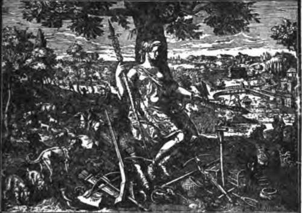
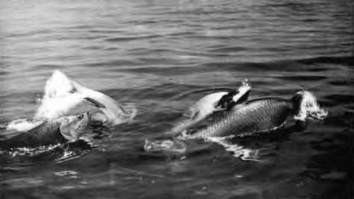
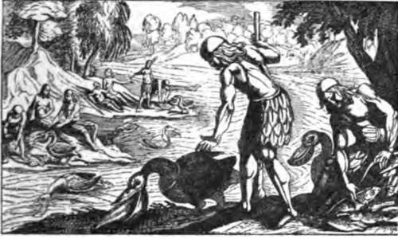
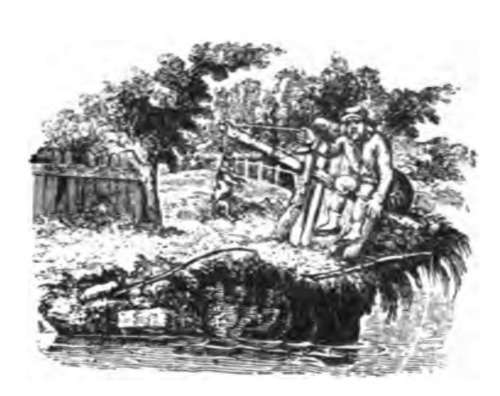
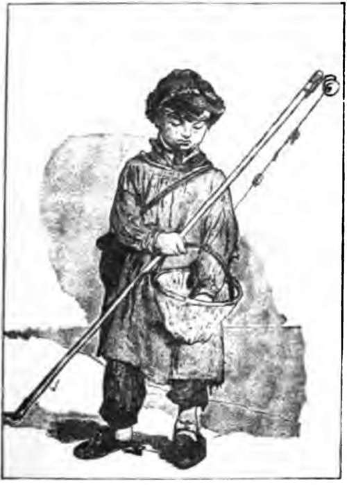
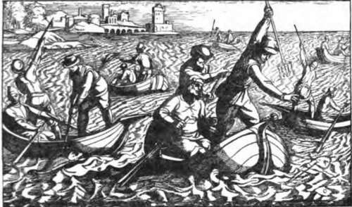

Chapter I. The Tarpons And The Gar-Fish. The Tarpons (Elopid)
Description
This section is from the book "Fishing", by Horace G. Hutchinson. Also available from Amazon: Fishing.
Chapter I. The Tarpons And The Gar-Fish. The Tarpons (Elopid)
These fishes belong to the sub-order Malacop-terygii, of which we have given a short definition in dealing with the salmon family, and they have often been associated with the herrings in zoological classifications. But they differ from the herrings in several important characters, such as the presence of an intergular bone, situated between the branches of the lower jaw, and the very high number of branchiostegal rays (over 20) supporting the gill-membranes, and of rays in the ventral fins (10 to 16), characters by which they approach the ganoid fishes which flourished in Mesozoic times.
Part I
From the point of view of the evolution of fish types, the Elopidae are a group of particular interest, being the survivors of a family very richly represented in Cretaceous seas, and now reduced to two genera, Elops and Megalops, each with two species, which may be regarded as the most archaic Tele-ostean fishes living.
The tarpon (Megalops), distinguished by very large scales and the prolongation of the last ray of the dorsal fin, is represented by the well-known species, M. atlanHcuSj in the West Atlantic, and by M. cyprinoides in the Indian Seas. The genus Elops, which differs in the smaller scales and the normal form of the dorsal fin, contains also two species, one of which, E. saurus, is distributed over all the warm and tropical seas, whilst the second, E. lacerta, is confined to the west coast of Africa, entering rivers. The young, at least those of the Elops, undergo metamorphoses somewhat similar to those of the eels; they are for a time elongate, band-shaped, and more or less transparent, after which stage they become gradually shorter and more compact, until they assume the proportions of the perfect fish.
1.- Tarpon Off The Coast Of Florida.
The Tarpon (Megalops atlanticus) has much the appearance of a huge herring. The body is oblong and compressed, covered with very large, thick, silvery smooth scales, of which there are about 40 in the lateral line; the mouth is very large, extending backwards beyond the eye, and furnished with minute, villiform teeth, which also extend on the palate and on the tongue; the dorsal fin is short and high, inserted behind the vertical of the ventral fins, its last ray much produced, longer than the head; the anal fin is longer and falcate, the caudal deeply forked. The fish, when alive, has a very brilliant silvery appearance, except on the back, which is green, and its huge scales, over two inches in diameter, are much prized by visitors to Florida and for fancy work in the curiosity shops, selling, as the late Professor Brown Goode tells us, for from ten to twenty-five cents each, the price paid to the fishermen being about fifty cents per dozen. The flesh is not valued. The tarpon reaches a length of six feet and a weight of no lbs.;1 it occurs in the Western Atlantic and in the Gulf of Mexico, ranging north to Cape Cod and south to Northern Brazil; it is rather abundant in the West Indies, and it has been taken as far to the eastward as the Bermudas; in pursuit of schools of young fry, on which it preys eagerly, it ascends rivers quite a long distance, having been reported from several miles up the rivers of the Gulf coast.
The name tarpon, or tarpund, by which the fish is known on the coasts of Florida and Georgia, is probably of Indian origin. " Silver-fish " is another name in use at Pensacola, whilst at other places it is the " Grande-Ecaille " (big-scale), the " Sabalo " or the " Savanilla." In Georgia and Florida, according to Brown Goode, it is commonly called the " Jew-fish/' a name also applied by the fishermen to the gigantic sea-perches of the genus Epinephelus.
1 Mr. Turner-Turner, it will be seen, gives it a much more liberal weight.-Ed.
The Bony-Fish (Elops saurus) is a more elongate fish, with small, thin, silvery scales, numbering about 100 in the lateral line; the mouth is not quite so large; the dorsal fin originates above the base of the ventrals, which are formed of more numerous rays (15 or 16 instead of 10), and the anal is shorter than the dorsal.
Slops saurus does not exceed a length of three feet. It has a very wide range, being found in nearly all the tropical seas, extending northwards to China, the Gulf of California, and the Gulf of Mexico, even straying on the Atlantic coast to Long Island, southwards to the Cape of Good Hope. It is an active fish, and its wild jumps when hooked afford lively sport to the tarpon-fishers in Florida. Its qualities as a game-fish are only beginning to be appreciated.
Besides that of bony-fish, Elops saurus is known by the vernacular names of " Ten Pounder,'" John-Mariggle,,, " Big-eyed Herring," " Piojo," " Liza," " Francesca," etc.
The " Bony-Fish " should not be confounded with the "Bone-Fish" of Americans, better known as the "Lady Fish," which is also appreciated as a game-fish by those who are familiar with it. This lady-fish or bone-fish, Albula vulpcs, belongs to a distinct, though closely related family, and is easily distinguished from the tarpons by the small, inferior mouth, the scales forming regular longitudinal series, and the dorsal fin originating well in advance of the vertical of the ventral fins. Like Elops saurus it grows to a length of three feet. Its flesh, unlike that of the latter, is highly appreciated at Key West.

Continue to: